Kitbash
Kitbashing refers to using (parts of) existing prefabs to creating a new prefab for use in your mod.
Setup
You will need the ripped Unity project, follow these instructions if you have not set this up yet. You only need to follow it up to the ILSpy part which is optional for what we do here.
Prefabs you want to import from an AssetBundle should not be created in the ripped project, but in your own Unity project, to avoid accidentally importing copyrighted assets!
Kitbashing the ripped Unity project
Create an empty GameObject to assemble your master copy. This object will be used as reference for position, rotation and scale of the KitbashSourceConfigs.
Simple kitbash piece
For the first example, we won't be using AssetBundles, only the ripped Unity project as reference. We use the "empty" CustomPiece as a base, so let's recreate that in Unity.
- Create a new folder in the ripped project, so we don't get confused about what's vanilla and what's not.
- Create an empty GameObject in the ripped project by right-clicking on the hierarchy in any scene/prefab and select Create empty. Drag this new GameObject into the new folder for our Kitbashes. The GameObject in the hierarchy will turn blue, remove it from the hierarchy, it is no longer needed here.
- Rename your new GameObject to
simple_kitbashand add a Cube (3D Object > Cube).
You should now have something like this:
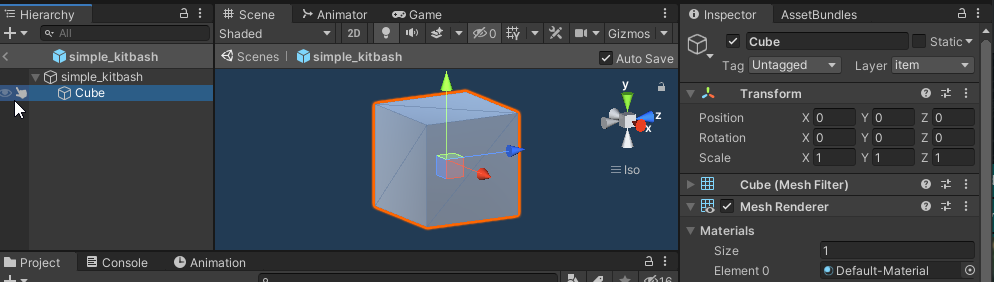
We can now start adding other pieces from vanilla assets! Open a prefab and look for the lowest (in the hierarchy) GameObject that has everything that you want. For example, the Ruby:
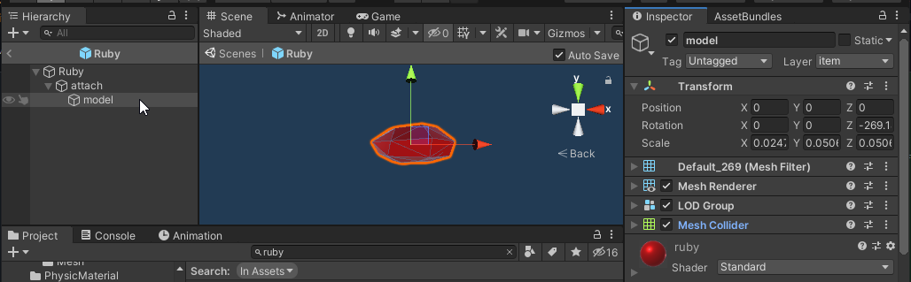
We don't need every GameObject in this prefab, we only want the visual (MeshRenderer) and usually also any Colliders. For the Ruby this means that we should copy the model gameObject, right click and select Copy.
Create a new KitbashSourceConfig for each time you copy a part, so you don't forget where it came from.
new KitbashSourceConfig
{
Name = "eye_1",
SourcePrefab = "Ruby",
SourcePath = "attach/model"
}
Go back to simple_kitbash and paste the copied GameObject. Unity seems to paste 50 units above the source location, so either zoom out or edit that manually to see the pasted part. Move & scale the GameObject however you want, you can edit all properties of the Transform.
Once everything is in position, add the position, rotation and scale of the GameObject in the KitbashSourceConfig:
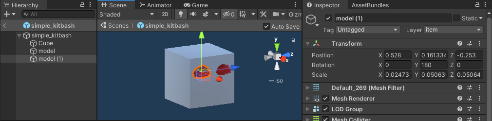
new KitbashSourceConfig
{
Name = "eye_1",
SourcePrefab = "Ruby",
SourcePath = "attach/model",
Position = new Vector3(0.528f, 0.1613345f, -0.253f),
Rotation = Quaternion.Euler(0, 180, 0f),
Scale = new Vector3(0.02473f, 0.05063999f, 0.05064f)
}
You can also have entire trees of GameObjects as the source, for example the Draugr Bow:
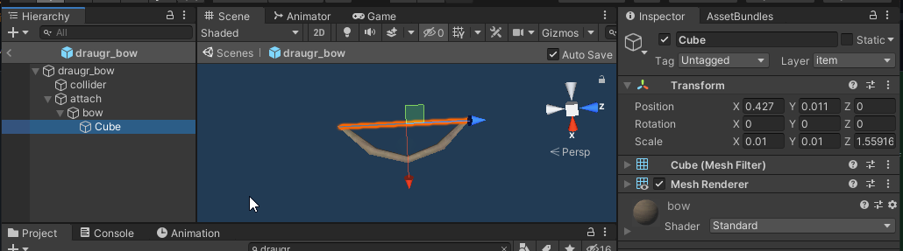
In this case the visuals are in 2 pieces, we need both bow and its child Cube (the drawstring). To do this, we simply use the parent bow as the source, the child will be copied along, just like in the Unity editor.
new KitbashSourceConfig
{
Name = "mouth",
SourcePrefab = "draugr_bow",
SourcePath = "attach/bow",
}
Again, paste the bow into simple_kitbash and position it until we have created our masterpiece
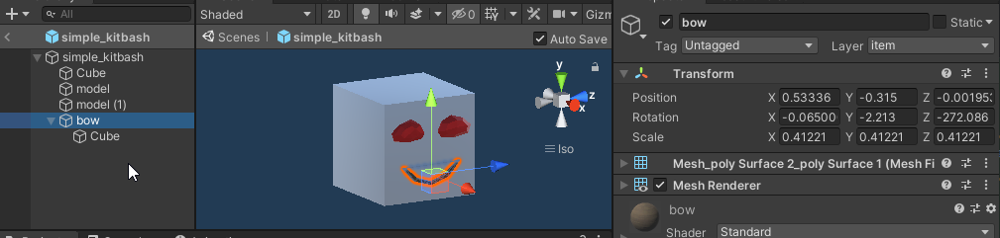
new KitbashSourceConfig
{
Name = "mouth",
SourcePrefab = "draugr_bow",
SourcePath = "attach/bow",
Position = new Vector3(0.53336f, -0.315f, -0.001953f),
Rotation = Quaternion.Euler(-0.06500001f, -2.213f, -272.086f),
Scale = new Vector3(0.41221f, 0.41221f, 0.41221f)
}
We now have all the KitbashSourceConfigs we need, so we can put it all together:
var simpleKitbashPiece = new CustomPiece("piece_simple_kitbash", true, "Hammer");
var piece = simpleKitbashPiece.Piece;
piece.m_icon = testSprite;
simpleKitbashPiece.FixReference = true;
PieceManager.Instance.AddPiece(simpleKitbashPiece);
KitbashManager.Instance.AddKitbash(simpleKitbashPiece.PiecePrefab, new KitbashConfig {
layer = "piece",
KitbashSources = new List<KitbashSourceConfig>
{
new KitbashSourceConfig
{
Name = "eye_1",
SourcePrefab = "Ruby",
SourcePath = "attach/model",
Position = new Vector3(0.528f, 0.1613345f, -0.253f),
Rotation = Quaternion.Euler(0, 180, 0f),
Scale = new Vector3(0.02473f, 0.05063999f, 0.05064f)
},
new KitbashSourceConfig
{
Name = "eye_2",
SourcePrefab = "Ruby",
SourcePath = "attach/model",
Position = new Vector3(0.528f, 0.1613345f, 0.253f),
Rotation = Quaternion.Euler(0, 180, 0f),
Scale = new Vector3(0.02473f, 0.05063999f, 0.05064f)
},
new KitbashSourceConfig
{
Name = "mouth",
SourcePrefab = "draugr_bow",
SourcePath = "attach/bow",
Position = new Vector3(0.53336f, -0.315f, -0.001953f),
Rotation = Quaternion.Euler(-0.06500001f, -2.213f, -272.086f),
Scale = new Vector3(0.41221f, 0.41221f, 0.41221f)
}
}
});
That's it! We can now place our kitbashed piece in game!
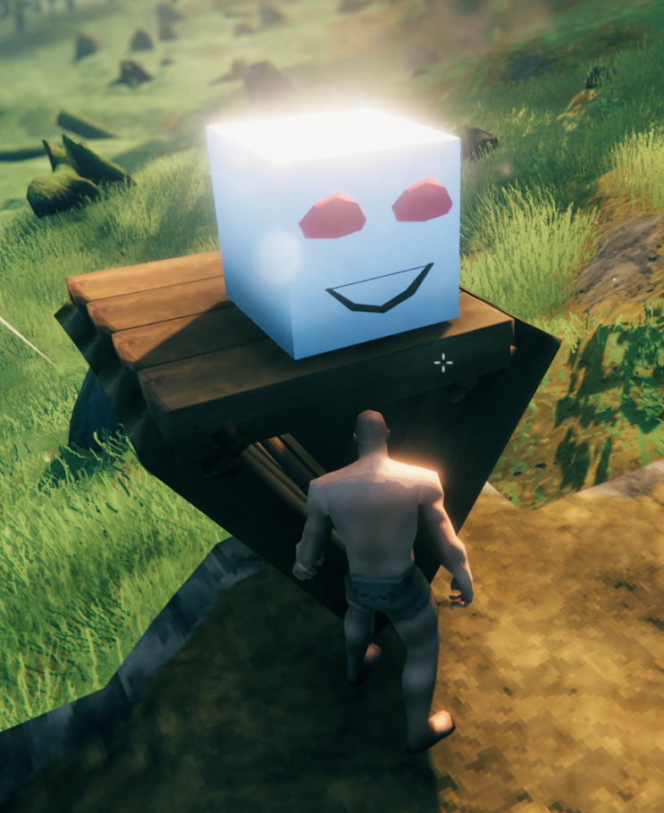
Advanced kitbash piece
Skeleton prefab
We can add a lot more features to the Kitbashed object if we start with a skeleton created in Unity (again in a separate project from the ripped project!)
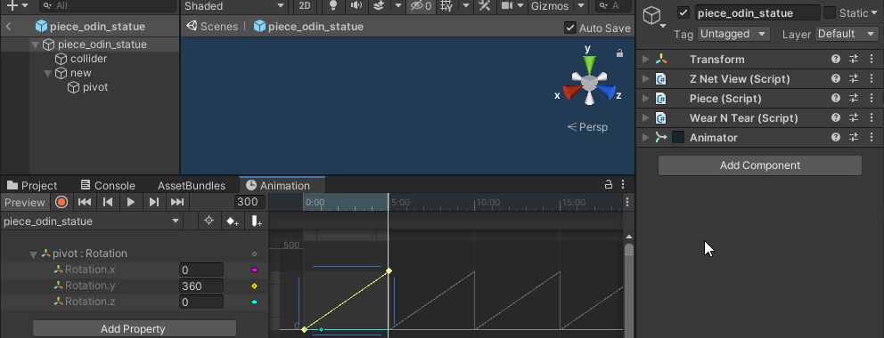
Here we have prepared quite a few things:
- Collider
- Not all parts that we copy have attached colliders, sometimes we need to prepare additional ones
- ZNetView
- Piece
- We don't need to add the required resources here, we can do this in
CustomPiecelater, or use JVLmocks_
- We don't need to add the required resources here, we can do this in
- WearNTear
- Animator
- The animator animates an empty GameObject called
pivot, we can later add parts to this to make them also rotate along.
- The animator animates an empty GameObject called
Loading the skeleton
See Asset creation - AssetBundle on how to create the AssetBundle
AssetBundle kitbashAssetBundle = AssetUtils.LoadAssetBundleFromResources("kitbash");
try
{
KitbashObject kitbashObject = KitbashManager.Instance.AddKitbash(kitbashAssetBundle.LoadAsset<GameObject>("piece_odin_statue"), new KitbashConfig
{
Layer = "piece",
KitbashSources = new List<KitbashSourceConfig>
{
...
}
});
//get the kitbashed prefab using kitbashObject.Prefab
} finally
{
kitbashAssetBundle.Unload(false);
}
Using exploded pieces
Many of the Pieces in Valheim have a special animation when destroying them, where they break up into many parts, for example, the Spinning Wheel:
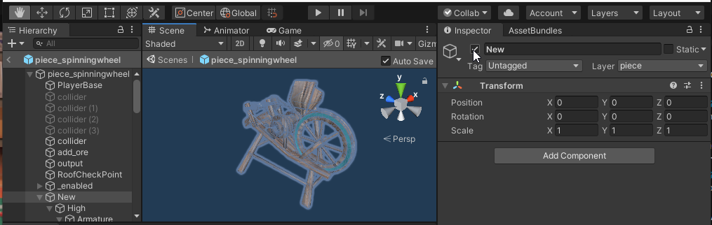
Disable the New GameObject, and enable the SpinningWheel_Destruction GameObject instead
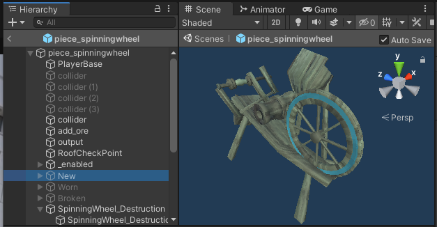
These parts usually have the Worn version of the material, which distorts the mesh a bit, update all materials to the new version to get a good look at all parts
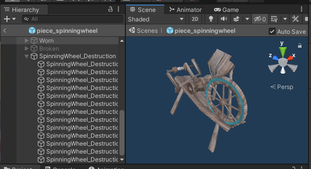
We can now use these smaller parts for our kitbash, along with the new material:
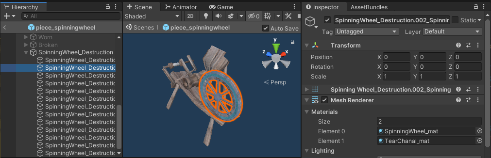
new KitbashSourceConfig
{
SourcePrefab = "piece_spinning_wheel",
SourcePath = "SpinningWheel_Destruction/SpinningWheel_Destruction.002_SpinningWheel_Broken.018",
Materials = new string[]{
"SpinningWheel_mat",
"TearChanal_mat"
}
},
Materials
Any material can be used, it does not have to be associated with the original mesh (many materials will map terribly though :D)
Drag & drop Materials onto the mesh to "paint" your kitbashed GameObject
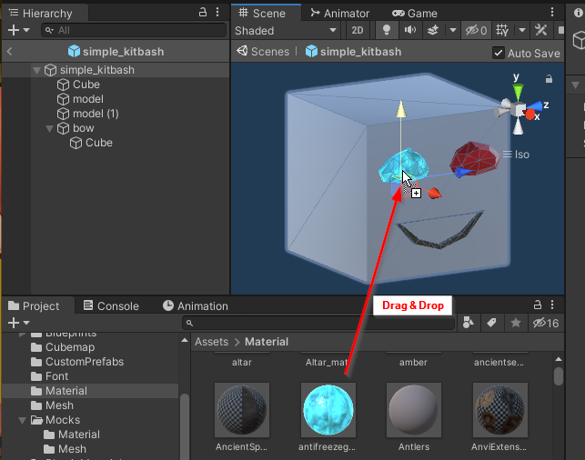
Add the Materials property to your KitbashSourceConfig:
new KitbashSourceConfig
{
Name = "eye_1",
SourcePrefab = "Ruby",
SourcePath = "attach/model",
Position = new Vector3(0.528f, 0.1613345f, -0.253f),
Rotation = Quaternion.Euler(0, 180, 0f),
Scale = new Vector3(0.02473f, 0.05063999f, 0.05064f),
Materials = new string[]{ "antifreezegland" }
},
Target parent
If you're using a more complicated skeleton, make sure that the master copy GameObject (in the ripped Unity project) is set up exactly the same as your skeleton in the AssetBundle (notice the gameObjects collider, new and pivot):
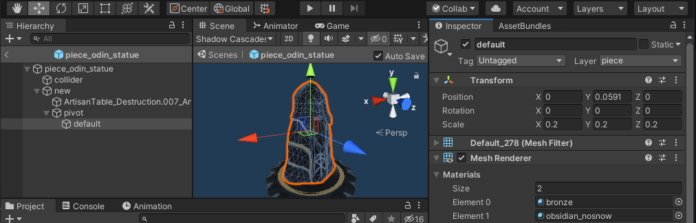
You can now paste the parts into for example pivot to add the parts to the rotating pivot.
The Transform values are relative to the parent GameObject, so make sure that all positions are exactly the same as your skeleton.
Use the TargetParentPath property to set the target:
new KitbashSourceConfig
{
SourcePrefab = "guard_stone",
SourcePath = "new/default",
TargetParentPath = "new/pivot",
Position = new Vector3(0, 0.0591f ,0),
Rotation = Quaternion.identity,
Scale = Vector3.one * 0.2f,
Materials = new string[]{
"bronze",
"obsidian_nosnow"
}
},
⚠️ If there are multiple materials for a MeshRenderer, make sure to use the correct order!
Collider
The gear, like all (?) exploded parts, has no Collider, so currently, our piece_odin_statue will clip into the table a bit, as only the Ward mesh is used to place it.
To fix this, we can use a custom Collider, and remove the mesh collider, to save on processing power.
In the master copy, update the values of the Collider so they match close enough (don't worry too much about pixel perfect accuracy here, try it in game to check how it feels to run into)
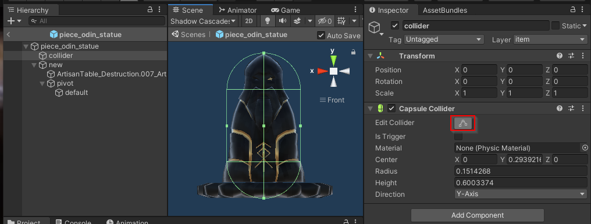
Once you are happy with the collider, copy the values from your master copy into your skeleton.
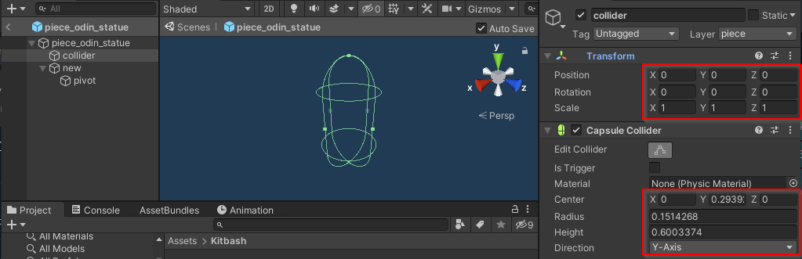
We still need to get rid of the MeshCollider that is attached to the new/default of the Ward:
kitbashObject.OnKitbashApplied += () =>
{
//We've added a CapsuleCollider to the skeleton, this is no longer needed
Object.Destroy(kitbashObject.Prefab.transform.Find("new/pivot/default").GetComponent<MeshCollider>());
};